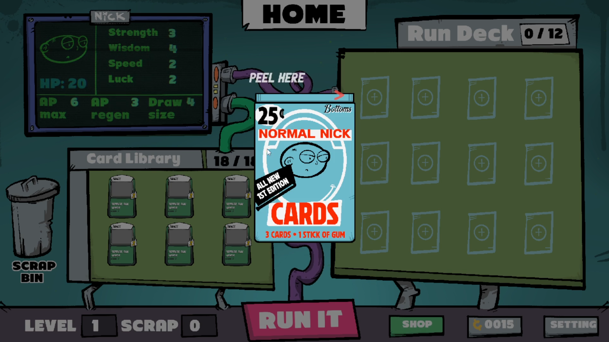
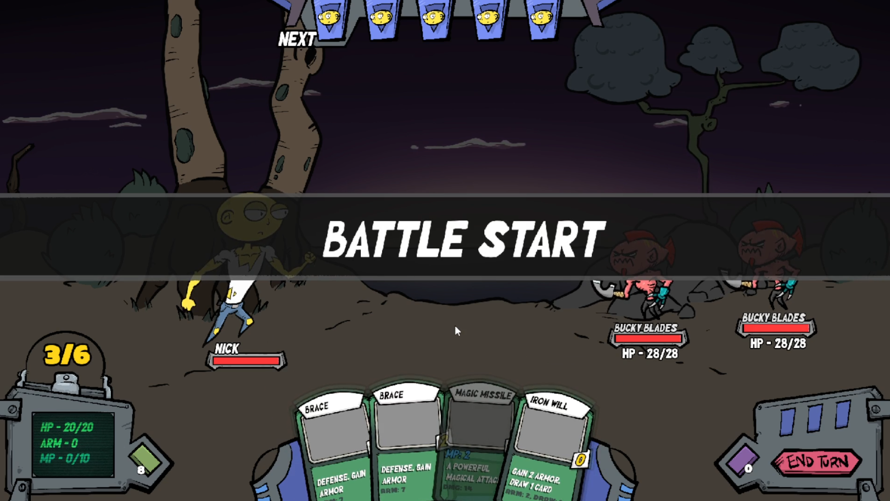
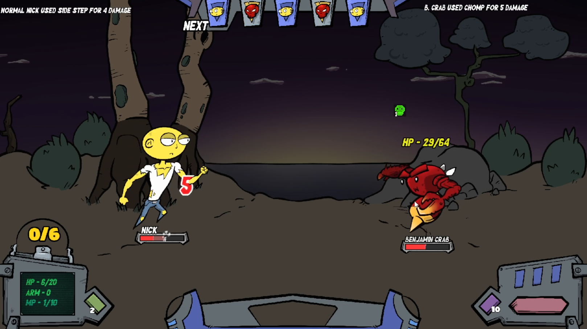

Game Overview
Normal Nick & The Painted Isles is a strategic, turn-based deckbuilding rogue-lite that fuses traditional card-crafting combat with a dynamic, Final Fantasy X-style Conditional Turn Battle (CTB) timeline. Outsmart alien monstrosities, manipulate the turn order, and manage your Action Points to help an ordinary guy survive an extraordinary predicament.
Abducted by a crew of hopelessly forgetful alien scientists, Nick ended up as an accidental stowaway on their journey back home. Now, stranded on a bizarre alien island light-years from Earth. He doesn't know how to pilot a starship, he doesn't know how to survive the local fauna, and he definitely doesn't know how to pay taxes in this quadrant.
Key Features
- Dynamic CTB Timeline: Leave rigid turn structures behind. Speed dictates how frequently units progress on a real-time tracking timeline, making positioning and timing critical to survival.
- Carry-Over Action Points: Plan your turns with deep tactical foresight. AP stacks and carries over turn-to-turn up to a maximum cap, allowing you to save up for devastating combos.
- Robust RPG Progression: Level up to scale core stats like HP, Strength, Wisdom, Speed, and Luck, and customize your build with milestone Perk Picks as you advance.
- Complex Status Engine: Master a symmetrical combat engine featuring tactical effects like Poison, Bound, Silence, Wisdom Down, Blind, and Strength Down that affect enemies and players alike.
- Perilous Adventure Maps: Navigate four increasingly complex maps filled with split paths, normal combat, elite encounters, safe campfires, choose-your-adventure events, and hidden mystery nodes.
- Permanent Meta-Progression: Death isn't the end of the road. Cash out your collected Scrap and Pennies between runs to unlock permanent upgrades, giving Nick a better fighting chance on his next attempt.
Can an ordinary guy survive an alien world, or is Nick destined to be a permanent cosmic tourist?


